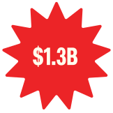

WHAT IS POWERBALL?
Powerball is one of the most popular lotteries in the United States, available in 45 states and renowned for its billionaire jackpots.
Tickets are priced between $2 and $3, and the jackpot starts at a minimum of $20 million. Drawings occur on Mondays, Wednesdays, and Saturdays, and the lottery has a history of awarding record-breaking prizes, including a $2.1 billion jackpot in 2022.
Tickets are priced between $2 and $3, and the jackpot starts at a minimum of $20 million. Drawings occur on Mondays, Wednesdays, and Saturdays, and the lottery has a history of awarding record-breaking prizes, including a $2.1 billion jackpot in 2022.

Cheng Saephan won a $1.3 billion Powerball jackpot in 2024. He opted for the lump sum, receiving $422 million after taxes.

Edwin Castro won the record-breaking $2.04 billion jackpot in 2022. Opting for the lump sum, he received approximately $997.6 million, which, after taxes, left him with around $628 million.